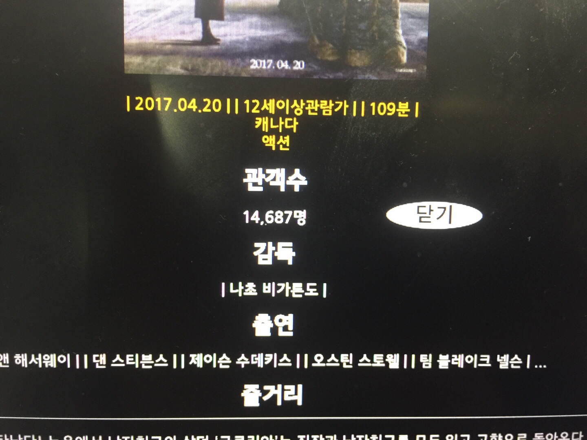

어떤 영화를 다운 받아 볼지 고민이 있는 사용자에게 특정 시기에 인기 있었던 영화들의
목록이나 선호하는 장르를 통해 영화를 검색함으로써 보고 싶은 영화를 쉽게 찾도록 할 것입니다.
특정 영화에 대해 관심이 많아 자세한 정보를 제공받고 싶은 사용자에게 영화의 매출액, 관객 수,
제작년도 등을 제공할 것입니다.
프로토타입 설계
가장 먼저, '영화' 라는 주제를 가진 대화형 프로토타입이 담고 있어야 할 페이지의 종류를 생각해보았다.
메인 페이지
추천 영화
장르별 영화
국가별 영화
영화 통합 검색
배우, 감독 검색
영화 상세 정보 페이지
메인 페이지
<과제 1에서 Mock Up Tool을 사용해서 그려놓았던 메인 페이지>
메인 페이지에서는 오늘의 박스오피스 정보를 시각적으로 크게 나타내주고 있다.
하지만 위 설계에는 문제가 있다. 박스오피스 정보는 총 10개의 영화를 담고 있는데, 왼쪽 또는 오른쪽 버튼을 눌러서 10개를 모두 확인하기 전까지는
어떤 영화가 현재 박스오피스 Top 10에 있는지 한 눈에 볼 수가 없었다.
따라서 현재 박스오피스 Top 10을 한 눈에 볼 수 있는 테이블을 추가하고, 테이블에서 특정 영화를 클릭하게 되면 화면에 해당 영화의 정보가
나타나도록 하는 방식으로 바꾸는 것이 사용자에게 더 빨리 정보를 전달할 수 있을거라고 판단하였다.
그리고 원래 상식적으로 테이블은 클릭 가능한 컴포넌트가 아니기 때문에 사용자에게 클릭할 수 있는 컴포넌트라는 것을 확실히 하기 위해서
커서를 포인터로 바꾸고 마우스를 테이블의 Row 위에 올려놓았을 때 확실한 feedback을 줌으로써
자연스럽게 클릭할 수 있는 컴포넌트라는 것을 사용자에게 인식시켜줄 필요성을 느꼈다.
추천 영화 페이지
<Mock Up Tool로 그렸던 추천 영화 페이지>
추천 영화 페이지에서 영화를 추천해주는 방법은 비교적 최근이라고 할 수 있는 2012년부터 현재까지의 날짜 중 하나를 랜덤으로 생성하여
해당 날짜의 박스오피스 Top 10을 보여줌으로써 해당 10개의 영화를 추천하는 것이었다. 하지만 이런 식으로 영화 10개를 테이블에 보여준다고
해서 사용자가 해당 영화에 관심이 생길 것 같지는 않았다. 사용자가 혹할만 한 시각적인 요소가 없었다. 따라서 영화를 나타내는 방식을 테이블이
아닌 리스트로 바꾸고, 리스트 내에 영화의 포스터와 제목 등 정보를 함께 표현함으로써 사용자가 추천된 영화에 더 흥미를 가질 수 있도록 할 것이다.
장르별 영화 페이지
장르별 영화 페이지의 기획 의도는 드라마, 스릴러, 멜로, 로맨스, 액션, 코미디 등 사용자에게 영화를 특정 좋아하는 장르만 제공할 수 있다면
좋겠다는 생각으로 기획했었다. 하지만 사용할 영화진흥위원회 API에서 movieType으로 검색을 하게 되면 드라마, 스릴러 등과 같이 구체적인 장르별로
영화가 검색되는 것이 아닌 장편, 단편 등 매우 포괄적으로 영화가 검색되었다. <영화진흥위원회 API의 영화 분류>
이와 같이 너무 불확실하게 분류가 되어 있기 때문에 사용자가 장르별 페이지에서 영화를 검색하는 의미가 없어질 것 같아서 이 메뉴는 삭제하기로 결정하였다.
국가별 영화 페이지
<Mock Up Tool로 그렸던 국가별 영화 페이지>
국가별 영화는 사용자가 특정 국가의 영화만을 선택하여 볼 수 있도록 하기 위해 만든 페이지이다.
목업 툴로 그렸던 위 그림과 다르게 구현해야 할 점들이 생겼다.
먼저 박스오피스 Top 10같은 경우에는 검색되는 영화의 수가 10개로 한정되어 있는데,
국가별 영화 같은 경우에는 해당 국가의 모든 영화가 검색되기 때문에 매우 많은 검색 결과를
한 페이지에 표시하기는 어렵기 때문에 페이징 처리가 필요할 것 같다. 또, 테이블로 영화에 대한 정보를 나타낼 시
사용자의 눈에 정보들이 잘 들어오지 않을 확률이 크기 때문에 리스트 형태로 영화 포스터와 함께 보여줌으로써 시각적인 효과를 극대화 할 것이다.
마지막으로, 현재 kobis 영화 API에서는 2004년부터의 영화를 검색하도록 지원하고 있는데,
국가만 선택하여 영화를 검색하게 할 경우 2004년부터 현재까지 해당 국가의 모든 영화가 표시되기 때문에 사용자가 진짜
원했던 정보를 얻기 힘들 수 있다. 따라서 검색할 연도를 사용자가 직접 선택할 수 있도록 하는 컴포넌트가 필요할 것 같다.
영화 통합 검색 페이지
원래 메인 페이지에 같이 있었던 영화 통합 검색을 따로 메뉴로 구성하였다.
그 이유는 우리가 포털사이트 네이버 등을 이용할 때, 보통 검색을 할 때 다른 정보들은 무시하는 경향이 있기 때문이다.
메인 페이지에서 오늘의 박스오피스 정보를 표시하고 있는데, 이 정보들을 사용자가 더 보도록 하기 위해서는 통합 검색 메뉴를 따로 구성할 필요가
있다고 느꼈다.
사용자가 텍스트(영화 이름)등을 통해서 직접 검색어를 입력하여 검색을 진행하고, 결과를 포스터와 함께 리스트로 보여줄 수 있도록
하는 것이 이 페이지의 목적이다.
배우, 감독 검색 페이지
<Mock Up Tool로 그렸던 배우, 감독 검색 페이지>
배우, 감독 페이지는 이름을 통해서 영화인의 정보를 검색할 수 있는 페이지로 기획했었다.
위 그림을 보면 볼 수 있는 정보는 해당 사람의 한글 이름, 영문명, 역할, 참여 작품이다. 이 정보들을 포함할 수 있는 페이지를 구현할 계획이며,
API에서 사람 이름으로 검색 뿐만 아니라 특정 영화명으로 검색하여 참여한 사람들을 검색하는 것을 지원하고 있어서
영화명으로 검색과 사람 이름으로 검색 두 개의 옵션을 사용자가 선택할 수 있도록 할 예정이다.
아쉽게도 촬영팀, 작가 등 프로필 사진을 구할 수 없는 사람이 많기 때문에 프로필 사진은 넣지 못할 것 같다.
영화 상세 정보 페이지
영화 상세 정보 페이지는 다른 페이지들에서 영화 상세 정보 보기를 클릭했을 때 나타나는 페이지이다.
메인 페이지, 국가별 영화 등 영화 정보가 나타나는 페이지라면 모두 이 창을 띄워야 하기 때문에 따로 페이지를 구성하기보다는
현재 보고 있는 페이지 위에 플로팅 형식으로 띄워주는 것이 효율적일 것 같다.
영화 상세 정보는 영화진흥위원회에서 지원하는 API로는 빈약한 부분이 있어, 과제 1에서는 신청하지 않았던 다음 영화 API를 추가로 신청하여 진행할 것이다.
<영화 상세 정보 페이지 예상안>
사용자와 과업 분석
사용자1 분석 ( 사용자1 특정 영화의 현재 매출액, 관객 수 검색하기 )
나이 : 20대
성별 : 남성
영화를 자주 보는 편
분석
사용자 1의 과업은 현재 상영 중인 영화 '미녀와 야수'에의 현재까지의 관객 수와 매출액을 검색하는 것이었습니다.
인터넷 창을 켜고 네이버 포털 사이트에서 '미녀와 야수'라는 검색어로 검색을 하고, 또 다시 '미녀와 야수 관객수'로
검색을 한 뒤, 매출액을 알기 위해서 '미녀와 야수 매출액'이라는 검색어로 총 3번의 검색에 걸쳐 결과물을 얻었습니다.
또, 결과물을 얻는 과정에서 기사 페이지에 들어가 기사를 확인하는 등 번거로운 행동이 많았습니다.
이를 통해 특정 영화를 검색할 때 하나의 키워드를 통해 얻고 싶은 정보를 모두 얻을 수 있는 페이지의 필요성이 느껴졌습니다.
사용자2 분석 ( 사용자2 특정 시기의 영화 검색 )
나이 : 20대
성별 : 남성
영화를 자주 보지는 않지만 보고 싶은 영화를 다운받아 즐기는 편
분석
사용자 2의 과업은 2012년에 인기있었던 영화를 검색하는 것이었습니다.
사용자 2도 사용자 1과 마찬가지로 네이버 포털 사이트에 접속하여 검색을 하는 행동을 하였는데,
서비스 종료한 '네이버 영화 스마트 파인더'를 통해 정보를 얻으려 하였습니다. 하지만 실패하자
'2012년 인기 영화'라는 키워드로 검색하여 원하는 정보를 얻었습니다. 이 과정에서 사용자들이
조금 더 쉽게 특정 시기의 영화 정보를 얻으려 한다는 것을 느꼈고, 이를 통해 사용자에게 빠르고 쉽게
특정 시기의 영화를 검색할 수 있도록 할 필요성이 있다고 느꼈습니다.
공공데이터 소개 및 테스트
공공데이터 종류
영화 진흥 위원회(KOBIS)의 영화관 입장권 통합전산망 오픈 API 바로가기
- 확인 가능한 정보
일별 박스오피스
주간/주말 박스오피스
공통코드 조회
영화 목록
영화 상세정보
영화사 목록
영화사 상세정보
영화인 목록
영화인 상세정보
Daum Developers 영화 콘텐츠 서비스 오픈 API 바로가기
- 확인 가능한 정보( 영화명으로 검색한 결과 )
썸네일
영화명
영화 영문명
원제 영화명
영화명 키워드
제작년도
예고편
일반예매
감독
출연배우
출연배우 더보기
제작국가
장르
개봉정보
공식사이트
동영상정보
포토정보
100자평 정보
카테고리
이벤트
줄거리
영화 포스터 URL
관련 기사 등등....
KOBIS OPEN API보다 영화에 대한 상세 정보가 매우 많고, 포스터도 따올 수 있어서 사용하게 되었습니다.
노트북과 마우스를 제공한다. 노트북 화면은 대화형 프로토타입의 메인 페이지가 떠 있는 상태이다.
<사용자에게 설문을 요청할 때의 화면>
설문을 시작하기 직전, 이 페이지는 영화 안내 페이지라는 것을 말하고 자유롭게 이동하며 이용해보라고 안내한다.
1점을 줘도 상관 없으니 객관적인 평가를 부탁한다
설문을 시작하고, 사용자가 설문을 끝마칠 때까지 아무 말도 하지 않는다.
설문을 끝내고 사용자에게 보완해야 할 점이나 느낀점을 듣고 끝낸다.
설문 문항
<설문조사지>
설문조사 문항은 크게
미적 외관 평가(30점)
접근성(25점)
기능(25점)
기타(20점)
으로 총 4개의 Section으로 나누어 총점을 100점으로 두어 평가하게 하였다.
프로토타입을 구현하면서 약간 애매했던 부분이나 평가받고 싶었던 것들을 항목으로 구성하였다.
사용자 1
20대 남성 <사용자 설문지>
미적 외관 평가
접근성
기능
기타
총점
29
22
25
14
90
사용자 1 분석
사용자 1은 성격이 급한 사용자였다. 웹 페이지가 로딩되는 시간을 견디지 못하고 계속해서 다른 컴포넌트들을
누르면서 왜 안나와~ 라는 말을 하였다. API 요청을 하고, 파싱하는 시간 때문에 힘든 사람이 있다는 것을 알았다.
또, 이 사용자는 페이지들을 보면서 상세 정보 보기 페이지를 발견하지 못해 영화 상세 정보 페이지를 한참 후에야 찾았다.
현재 상세 정보 보기 버튼이 너무 눈에 띄지 않아서 생긴 문제이므로 버튼의 외형을 바꾸어 눈에 잘 보이도록 해야 할 것 같다.
사용자 2
20대 남성 <사용자 설문지>
미적 외관 평가
접근성
기능
기타
총점
28
23
23
17
91
사용자 2 분석
사용자 2는 차근차근 메인 페이지부터 기능을 하나하나 천천히 실행해본 뒤, 설문 항목에 맞추어 한번씩 더 실행해 보았다.
HCI 과목을 작년에 수강한 적이 있어서인지 본인의 경험에 맞추어 각 컴포넌트들을 살펴보았는데, 추천 영화 부분에서 추천을 해주는 방법에 대해 의아함을 보였다.
마지막 코멘트로는 완성도 높은 페이지라는 말과 함께 순위 글씨에 순위가 오른 것은 빨간색, 내려간 것은 파란색으로 표시하면
더 효과적일 것 같다는 말을 써주었다. 시각적인 효과를 극대화 하기 위해 필요한 작업인 것 같다.
사용자 3
20대 남성 <사용자 설문지>
미적 외관 평가
접근성
기능
기타
총점
30
23
24
19
96
사용자 3 분석
사용자 3은 웹 페이지를 처음부터 설문 문항에 맞추어 각 페이지들을 실행해 보는 모습을 보였다.
특히 배우 검색 탭에서 많이 머무르며 많은 배우들과 영화 작품들을 검색하였는데, 이 과정에서 배우들의 사진이 나오지 않는 것을 불편해하였다.
또, 영화명을 통해서 영화인들을 검색할 때 영화인 리스트가 한 눈에 들어오지 않는다는 말을 해주었다.
이 문제들을 해결할 때 일단 API 특성상 사람의 사진을 보여주는 것은 힘들 것 같고, 리스트가 한 눈에 들어오지 않는 것은 참여 작품의
표시 방법을 다르게 하여 해결할 수 있을 것 같다.
사용자 4
20대 남성 <사용자 설문지>
미적 외관 평가
접근성
기능
기타
총점
28
21
23
17
89
사용자 4 분석
사용자 4는 테스트에 참여한 사람들 중 가장 꼼꼼하게 페이지들을 살펴보았다.
본인은 원래 이런 테스트 하는거 좋아한다면서 정말 오랜 시간동안 페이지를 체험하였다.
사용자 3까지의 점수가 너무 높아서 혹시 같이 있으면서 관찰해서 그런가 싶어서 사용자 4부터는
테스트 과정을 지켜보지 않고 코멘트를 써준 것과 설문이 끝난 후 후기 인터뷰를 통해 테스트를 진행하기로 하였다.
사용자 4는 많은 문제점들을 말해주었다. 일단 영화 컴포넌트의 크기가 너무 커서 페이지당 보여지는 영화 수가 적다는 것과
검색 페이지에도 사용자가 검색어를 떠올릴 수 있게 검색 예제들을 표시해 주었으면 좋겠다는 것, 상세 정보 페이지에 리뷰를 추가했으면 좋겠다는 것, 메인 페이지에 영화 하나씩만 보이는 것이 아쉽다고 말해주었다.
컴포넌트의 크기가 너무 큰 것은 나도 프로토타입을 구현하면서 느꼈던 점이었다.
해결 방안을 생각해보면 검색 예제 같은 경우에는 텍스트로 placeholder를 주면 될 것 같고
영화가 들어가는 ul의 li 크기를 줄여서 한 줄에 영화가 3~4개정도 표시되도록 해야할 것 같다.
또, 메인 페이지에 작게라도 다른 영화 정보들을 표시하고, 영화 상세 정보 페이지에서 daum API의 리뷰 기능을 이용할 수 있을 것 같다.
사용자 5
20대 남성 <사용자 설문지>
미적 외관 평가
접근성
기능
기타
총점
22
17
16
15
70
사용자 5 분석
사용자 5는 정말 객관적인 점수를 주었다. 전체적으로 웹 페이지의 속도가 만족스럽지 않다고 하였으며,
전체적으로 웹 페이지의 외관이 다른 상용화되어 서비스 하고 있는 페이지들에 비해 떨어진다고 하였다.
보완해야 할 점은 영화 상세 정보 페이지가 상단 바 메뉴를 통해 다음 페이지를 눌렀음에도 없어지지 않고 계속 있었다는 점 ,
영화 포스터 클릭 시 아무런 기능이 없었다는 점을 말해 주었다.
해결 방안으로 페이지의 다른 부분 클릭시 상세 정보 페이지가 사라지도록 하고, 영화 포스터 클릭시에도 상세 정보 페이지가 뜨도록 하면 좋을 것 같다.
사용자 6
20대 남성 <사용자 설문지>
미적 외관 평가
접근성
기능
기타
총점
25
25
22
16
88
사용자 6 분석
사용자 6은 페이지들 간의 연계를 매우 중요시하는 것 같았다. 예를 들어 메인 페이지에서 영화 이름을 누르면
영화 상세 정보 페이지가 나왔으면 좋겠고, 영화 상세 정보 페이지에서 포스터를 누르면 확대 기능이 있었으면 좋겠다던지, 배우 이름을 클릭하면 배우의 상세 정보가 나왔으면 좋겠다는 등 페이지들의 연계를 통한 정보 표시에 대한 조언을 많이 해주었다.
영화 상세 정보 페이지의 각 컴포넌트를 링크로 구성해 클릭 시 특정 행동을 하도록 연계하는 페이지 설계가 필요할 것 같다.
사용자 7
20대 여성 <사용자 설문지>
미적 외관 평가
접근성
기능
기타
총점
25
25
19
15
84
사용자 7 분석
나는 총 10명의 사용자를 테스트하였는데, 10명 중 4명을 여자 사용자로 테스트하였다.
사용자 7부터는 여자 사용자에게 테스트를 부탁하였다.
사용자 7은 페이지 내에 있는 오류를 발견하기 위해 애쓰는 모습을 보였다. 전체적으로는 잘 만든 웹페이지이지만,
디테일적인 부분에서 부족한 부분이 많다는 평을 내렸다.
일단 사진을 눌렀을 때 영화 상세 정보 페이지가 나왔으면 좋겠다는 의견과, 이 메뉴 제목의 위치가 적절하지 않다고 하였다.
또, 메인 페이지의 1 ~ 10까지의 영화가 자동으로 넘어갔으면 좋겠다고 하였다.
국가명 검색 국가명이 가나다순으로 정렬되었으면 하고, 영화 상세 정보 페이지가 다른 페이지로 넘어가도 꺼지지 않는 현상을 지적하였다.
마지막으로, 달력에서 특정 버튼을 누르면 오늘 날짜로 돌아오도록 했으면 좋겠다라는 말로 테스트를 마쳤다.
사용자 8
20대 여성 <사용자 설문지>
미적 외관 평가
접근성
기능
기타
총점
27
25
23
18
93
사용자 8 분석
사용자 8은 사용자 7과 함께 테스트를 진행했는데, 사용자 7과 함께 오류가 나오게 하고 싶어서 안달난 것처럼 테스트를 하였다.
일단 앞에서도 많이 지적되었던 영화 상세 정보 페이지가 잘 안보인다는 것과
박스오피스 순위는 개인적으로 일주일 단위로 계산하는 것이 일반적이므로 박스오피스가 주 단위로 나타났으면 좋겠다고 하였다.
또, 청소년 관람 불가 영화가 필터링 없이 나오는 것에 대해 안좋다고 하였다.
전체적으로는 편리한 페이지라고 평하였지만, 다른 페이지와의 차별성이 보이지 않는다고 했다.
사용자 9
20대 여성 <사용자 설문지>
미적 외관 평가
접근성
기능
기타
총점
30
22
20
15
87
사용자 9 분석
사용자 9는 테스트를 요청했던 사람들 중 유일하게 모르는 사람이었다.
디자인에 대해서 전체적으로 호평을 하였고, 본인은 현재 인터넷 프로그래밍 과목 수강중인데 HCI에서는 이런 것들을 하는구나...하면서 감탄하기도 하였다.
추가로 있었으면 하는 기능은 통합 검색에서 영화 말고 배우도 검색할 수 있었으면 좋겠다고 했다.
사용자 10
20대 여성 <사용자 설문지>
미적 외관 평가
접근성
기능
기타
총점
28
24
22
16
90
사용자 10 분석
사용자 10은 작년 HCI 과목 수강자이며, 수강할 당시 사용자 평가를 내가 했었다. 작년 우수 과제에 선정된 사람이라 이런 평가를 받으면 좋을 것 같았다.
미적 외관 부분에서는 전체적으로 좋지만 영화 상세 정보 페이지가 X 버튼을 누르기 전까지 사라지지 않는다는 점에서 예외처리가 부족하다고 말해주었다.
보완할 점으로는 영화 통합 검색 탭에서 검색을 하지 않아도 바로 보이는 컨텐츠가 있었으면 좋겠다
고 하였다. 그리고 상세 정보 페이지에서 사진 공유 버튼을 눌렀을 때, 다른 페이지로 가지지 않는다고 말하였다.
분석
총 10명의 사용자에게 테스트를 완료하였다. 개발할 때에는 몰랐던 버그들도 등장하였고,
실제 사용자들이 사용하는 모습을 보니 이건 이렇게 했으면 더 좋았을걸..하는 생각들이 많이 들었다
사용자 평균 분석
미적 외관 평가
메인 페이지의 외관을 평가하라.
4.7점
'추천 영화', '국가별 영화', '영화 통합 검색' 메뉴의 외관을 평가하라.
4.7점
'배우, 감독' 메뉴의 외관을 평가하라.
4점
영화 상세 정보 페이지의 외관을 평가하라.
4.6점
웹 페이지의 종합적인 외관을 평가하라.(총점 10)
9.2점
총점 : 27.2점
접근성
상단 메뉴 바의 각 메뉴 이름의 적절성
4.6점
특정 행동을 하려 할 때 어떤 메뉴에 들어가야 할지 바로 알 수 있었는가?
4.7점
기존의 웹사이트를 이용할 때와 달라서 불편한 점이 있었는가?
4.5점
버튼 등 클릭할 수 있는 컴포넌트들이 즉각적인 피드백을 제공했는가?
4.7점
각 컴포넌트들의 위치는 적절한가?
4.2점
총점 : 22.7점
기능
영화 상세 정보 페이지에 알고 싶은 모든 정보들이 들어가 있었나?
4.4점
최초 접속할 때 얻고자 했던 정보를 이 페이지를 통해 얻었는가?
4.8점
원했던 결과와 다르게 동작한 컴포넌트가 있었나?
4.1점
'추천 영화' 메뉴를 누르면 자동으로 날짜를 선택해 해당 날짜의 박스오피스를 보여준다. 이 영화 추천 방식을 평가하라.
4.1점
웹 페이지의 오류 처리는 잘 이루어졌는가?
4.5점
총점 : 21.9점
기타
재방문 의사가 있는 웹페이지인가?
4.1점
다른 웹페이지와 차별화 된 점이 있는가?
3.5점
이 웹 페이지를 종합적으로 평가하자면?(총점 10)
8.6점
총점 : 16.2점
총점 평균 : 88점
총점 88점이라는 수치를 받았다. 지인에게 테스트를 부탁하였더니 약간 점수가 높게 나온 경향이 있는 것 같다.
사용자가 느낀 보완해야 할 점
많이 언급되었던 상세 정보 페이지 보기 버튼이 눈에 띄지 않는 것을 해결해야 한다.
순위가 올라가고 내려가는 것을 표시할 때, 올라간 것은 빨간색으로 내려간 것은 파란색으로 표현하여 시각적 효과를 극대화할 수 있을 것 같다.
한 화면 내에 표시되는 영화의 수가 너무 적다는 평이 있었다. 따라서 영화를 작게 배치할 필요가 있다.
배우 검색, 영화 검색 시 검색창에 검색어의 예제를 넣어 사용자가 검색어를 더 잘 떠올릴 수 있도록 해야 한다.
영화 상세 정보 페이지에 리뷰 란을 추가해야 한다.
메인 페이지에서 자동으로 몇 초마다 보여지는 컨텐트를 바꾸는 것을 추가해야 한다.
영화 상세 보기 페이지에서 다른 부분 클릭 시 상세 보기 페이지 창은 숨겨지도록 해야 한다.
영화 포스터를 클릭하면 해당 영화의 상세정보를 볼 수 있도록 해야 한다.
상세 정보 페이지에서 특정 배우를 클릭했을 때 해당 배우 검색 결과 페이지로 이동할 수 있어야 한다.
상세 정보 보기 버튼 뿐 아니라 포스터 이미지를 클릭하여 상세 정보를 볼 수 있도록 하여 상세 정보 페이지의 접근성을 향상시켰다.
순위가 올라가고 내려가는 것을 표시할 때, 올라간 것은 빨간색으로 내려간 것은 파란색으로 표현하여 시각적 효과를 극대화할 수 있을 것 같다.
<순위가 올라간 부분과 내려간 부분의 색을 각각 빨간색, 파란색으로 처리>
한 화면 내에 표시되는 영화의 수가 너무 적다는 평이 있었다. 따라서 영화를 작게 배치할 필요가 있다.
<기존의 화면><최종 프로토타입 화면>
기존 초기 프로토타입에 비해 각 영화 Element의 크기가 작아졌다.
기존에 한 화면에 2개 밖에 들어오지 않았던 영화가 한 화면에 10개를 모두 표시할 수 있게 되어 스크롤 할 불편을 덜 수 있다.
배우 검색, 영화 검색 시 검색창에 검색어의 예제를 넣어 사용자가 검색어를 더 잘 떠올릴 수 있도록 해야 한다.
<인물 검색 화면><영화 통합 검색 화면>
각 input 태그에 placeholder 속성을 추가하여 사용자가 검색어를 더 쉽게 떠올릴 수 있게 하였다.
영화 상세 정보 페이지에 리뷰 란을 추가해야 한다.
<DAUM OPEN API 명세서>
다음 오픈 API에서 더이상 리뷰를 지원하지 않아 추가하지 못하였다.
메인 페이지에서 자동으로 몇 초마다 보여지는 컨텐트를 바꾸는 것을 추가해야 한다.
javascript의 setInterval() 함수를 이용하여 3초마다 메인 페이지의 영화를 바꾸는 코드를 추가하였다.
메인 페이지가 보이지 않을 때에는 clearInterval() 함수를 통해 자동 페이징을 하지 않도록 하였다.
영화 상세 보기 페이지에서 다른 부분 클릭 시 상세 보기 페이지 창은 숨겨지도록 해야 한다.
초기 프로토타입에서는 다른 메뉴를 클릭하여도 영화 상세 정보 페이지가 남아있었다.
이것으로 인해 사용자가 불편을 느꼈기 때문에 다른 컴포넌트를 클릭하였을 때 상세 정보 페이지가 닫히도록 하였다.
추가적으로 사용자가 닫기 버튼을 찾지 못한 경우가 있었는데, div 내에서는 마우스 커서를 닫기로 변경하고 div 클릭시
상세 정보 페이지가 닫히도록 하여 더 쉽게 상세 정보 페이지를 닫을 수 있도록 하였다.

<div 마우스 커서 변경>
상세 정보 페이지에서 특정 배우를 클릭했을 때 해당 배우 검색 결과 페이지로 이동할 수 있어야 한다.
이 기능은 영화 상세 정보 페이지 div 클릭시 닫는 행동을 추가하였기 때문에 다른 기능으로 변경하였다.
배우, 감독 검색에서 참여 영화명을 클릭하면 해당 영화의 통합검색 페이지로 이동하도록 하였다.
메뉴 타이틀바의 위치를 변경하여 더 자연스럽게 UI를 배치해야 한다.
<기존의 메뉴 타이틀><새로운 메뉴 타이틀>
메뉴 타이틀의 위치가 애매하다는 평이 있어 UI 배치를 좀 더 자연스럽게 변경하였다.
국가명 select option들을 가나다순으로 정렬해야 한다.
<기존의 정렬되지 않은 옵션><정렬된 옵션>
국가명이 정렬되어 있지 않아 불편하다는 사용자가 있었다. javascript의 sort() 함수를 이용하여 국가명이 들어있는 배열을 정렬하였다.
달력에서 오늘 날짜로 세팅하는 버튼이 있어야 한다.
<오늘의 박스오피스 정보 보기 버튼>
검색 페이지들이 너무 허전하므로 검색을 하기 전에 하단에 보이는 컨텐츠가 있어야 한다.
<인물 검색 예제><영화 검색 예제>
배우, 감독 검색 탭과 영화 통합 검색 탭에서 기존의 화면은 검색창 외의 화면들이 텅 비어있어서 허전한 느낌을 주었다.
따라서 각각 default인 ""로 검색한 결과를 미리 세팅하게 하였다.
추가 구현 사항
<로딩 시 프로그레스바>
OPEN API에 요청을 보내고 받는 시간동안 사용자는 아무런 반응이 없다면 자신이 버튼을 눌렀는지 확인하기 어렵다.
시스템의 상태를 정확하게 나타내고 사용자에게 정확한 피드백을 주기 위해 ProgressBar를 추가하였다.
최종 사용성 평가(정량적 평가)
과업
본인이 새내기였던 년도의 박스오피스 Top 10을 검색한다.
1위 영화의 참여 배우를 검색한다.
본인이 가장 인상깊게 본 영화를 검색하여 줄거리를 확인하고 사진을 본다.
가설
개선된 프로토타입은 페이지에 대한 접근성이 향상되고 사용자의 눈에 컨텐츠가 잘 보이도록 개선했기 때문에
과업을 수행하는 데 걸리는 시간이 초기 프로토타입보다 더 짧을것이다.
실험 조건
집단 간 평가 vs 집단 내 평가
집단 간 평가로 진행하였다. 평가하는 사용자가 적을 때에는 집단 내 평가를 진행하는 것이 더 좋을 수 있지만,
이 프로토타입은 과업을 수행하는 데 걸리는 시간을 측정하는 것이기 떄문에 사용자가 프로토타입에 익숙해지면
다음 프로토타입의 과업을 너무 빨리 수행할 수 있을 것 같아 집단 간 평가 2명은 초기 프로토타입, 2명은 최종
프로토타입으로 실험을 진행하였다.
독립 변수
인터페이스 변경
종속 변수
각 프로토타입의 인터페이스에 따른 과업 수행 시간
통제 변수
과제 2에서 프로토타입을 평가했던 사용자들은 이미 사용법을 알고 있기 때문에 프로토타입을 한 번도
사용해보지 않은 사람들로만 평가자로 구성하였다
무작위 변수
실험 장소, 환경, 나이, 성별
실험 수행
사용자 1 - 초기 프로토타입 사용
20대 여성소요 시간 : 71초
사용자 2 - 초기 프로토타입 사용
20대 남성소요 시간 : 104초
사용자 3 - 최종 프로토타입 사용
20대 남성소요 시간 : 72초
사용자 4 - 최종 프로토타입 사용
20대 남성소요 시간 : 44초
결과
결론 및 향후 개선방향
결론
초기 프로토타입보다 평균 과업 소요 시간이 많이 단축되었다. 집단 간 평가를 하였으므로 평가 순서에 영향을 받지 않고
정확한 데이터를 냈다고 할 수 있다. 평가할 사용자가 더 많았다면 좋았겠지만 두 명만으로도 인터페이스 변경을 통한 접근성의 향상을 볼 수 있었다.
향후 개선방향
이번 과제에서 KOBIS와 DAUM의 두 가지 OPEN API를 사용하였는데, 이 두 API의 각 영화 코드가 연동되어 있었다면
더 완벽하게 페이지를 구현할 수 있었을 것 같은데 그러지 못해 아쉽다. API 선택에 더 신중을 가했어야 했다.
그리고 정량적 평가 진행 당시 끝난 후 사용자가 왜 날짜를 보는데 메뉴 이름이 추천 영화냐는 말을 하였는데, 이를 개선하여
향후에 메뉴의 이름과 영화 추천 방식을 변경하여 더 자연스러운 웹 페이지 흐름을 만들 수 있다면 더 좋은 페이지가 될 것 같다.


 이 메뉴 제목의 위치가 적절하지 않다고 하였다.
이 메뉴 제목의 위치가 적절하지 않다고 하였다.